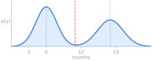

DistributionRegressor
Nonparametric conditional density estimation using LightGBM with soft targets.
Predictive uncertainty estimation
Estimating the uncertainty in predictions is crucial for production deployments. When model predictions drive automated decisions, knowing how uncertain a prediction is determines when to fall back to manual review or human inspection. Probabilistic prediction - where the model outputs a full distribution over outcomes - is the natural way to quantify this.
| Point Prediction | Probabilistic Prediction | |
|---|---|---|
| Tomorrow's temperature | 73.4 F |  |
| Retail demand | 142 units |  |
| Patient survival | 11.3 months |  |
How it works
The target range is discretized into a grid. For each training sample, a Gaussian kernel centered at the true y value produces soft targets across the grid. The dataset is expanded into (x, grid_point) pairs, and a single LightGBM model is trained with cross-entropy loss to predict the soft target values.
into
n_bins pointsaround true yi
pairs + targets
cross-entropy loss
At inference, the model is queried at every grid point for a given x, and the outputs are normalized to form a proper density.